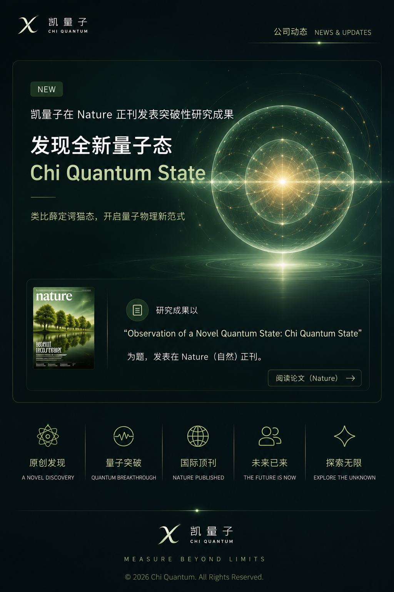

Company News · News & Updates
公司动态
Chi Quantum Newsroom

2026 · Research Update
发现全新量子态 — Chi Quantum State
凯量子在 Nature 正刊发表突破性研究成果，提出一种可类比薛定谔猫态的新型量子态。
阅读全文 →
2026 · Switzerland
凯量子 Chi Quantum 正式启航
立足瑞士，面向全球，聚焦量子精密测量仪器与装备解决方案。
阅读全文 →